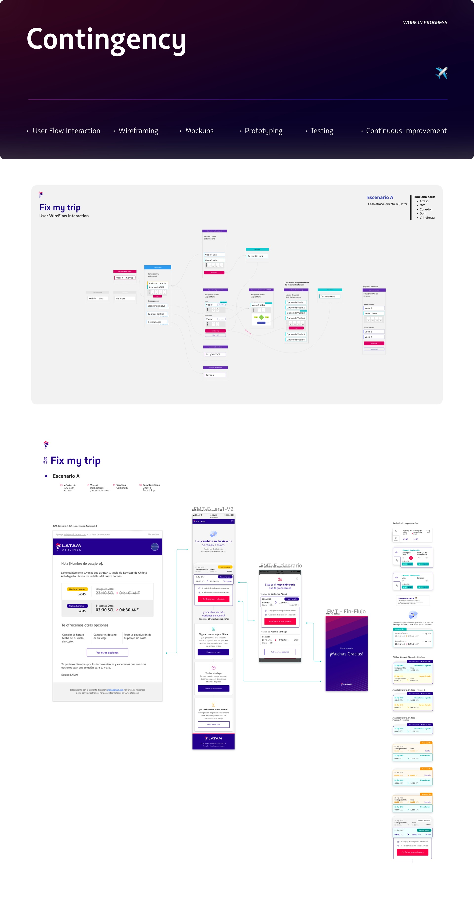
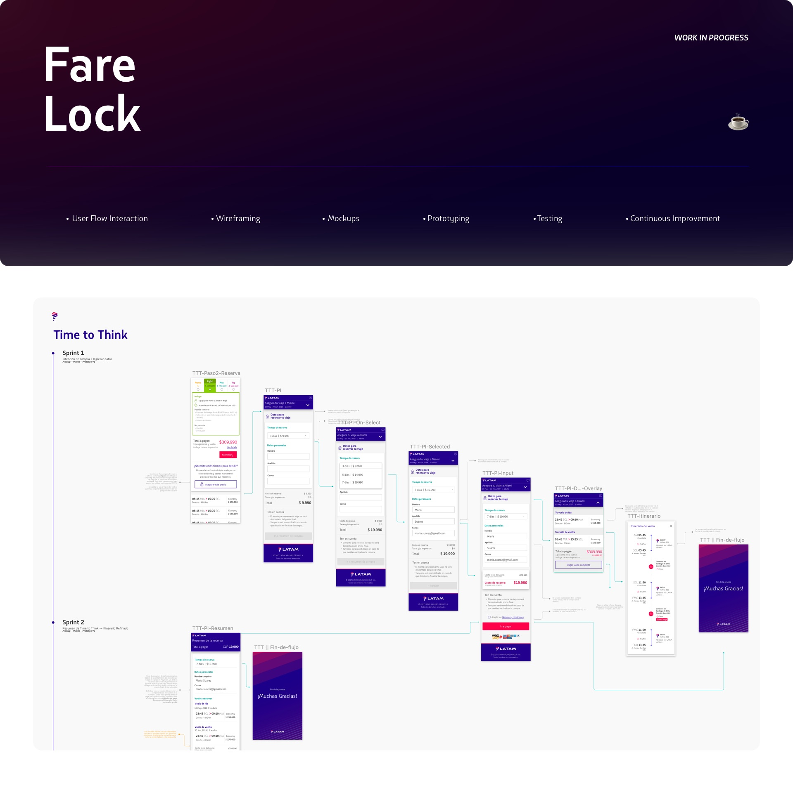
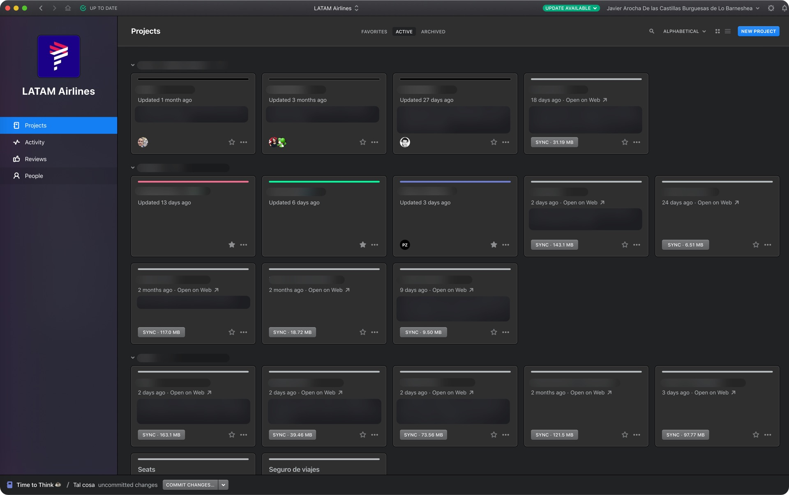

Spearheaded innovation within a 50+ designer organization, conceptualizing the future of the flight experience through AI integrations (Alexa) and redesigning real-time crisis management for millions of passengers.
Designing for Latin America's largest airline requires understanding scale on a different level. As part of a global team of over 50 designers, I was specifically embedded in the Concepts area. My role was to look ahead: from integrating emerging technologies to solving the most critical, high-friction pain points in the passenger journey.

Redesigning the user experience during moments of peak friction and stress: flight delays and cancellations. We needed a digital solution that could mitigate airport chaos and return control to the passenger.
To solve real problems, you have to experience them. I didn't stay in Figma; I took my research to the field.

Field Research in Brazil: I traveled to two of Brazil's busiest airports to experience operational contingencies firsthand. I embedded myself on the frontline, interacting directly with passengers affected by delays and cancellations.
Data-Driven Iteration: Beyond ethnographic research, I drove continuous improvement using analytics and testing tools like Optimizely, Google Analytics, Hotjar, and Usability Hub to validate our design hypotheses.

Translated complex visual booking and check-in flows into natural, efficient voice interactions for Alexa, opening a new acquisition and retention channel for the airline.
Global Stakeholder Management: Acted as a UX Auditor bridging the gap between external vendors and LATAM. I coordinated efforts across multidisciplinary, remote pods operating simultaneously in Santiago (Chile), São Paulo (Brazil), Spain, and Peru.

Optimized conversion rates with the strategic "Time to think" feature, allowing users to hold ticket prices for a few days, drastically increasing booking retention.

A healthy product requires healthy documentation and processes. I championed the use of strict Control Versioning (Abstract), Jira, and Confluence to ensure seamless collaboration between designers, writers, POs, and developers across the organization.
I learned that true innovation isn't just about using new technologies like Alexa; it's about having the humility to go to the frontline, absorb the emotional impact of a frustrated user, and transform that into resilient, scalable digital solutions while orchestrating global teams.